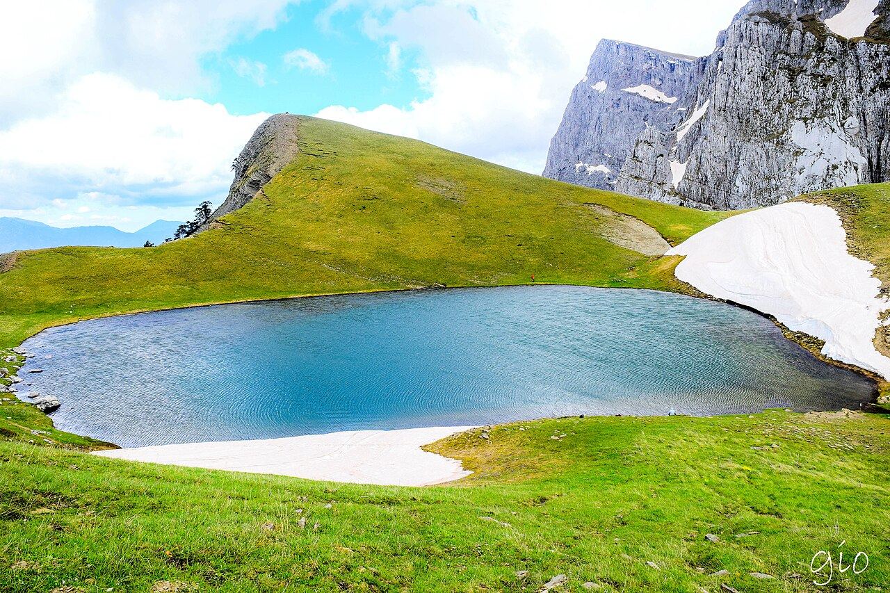

📍 Ήπειρος | 📍 Υψόμετρο: ~2.050μ.
✨ Μία από τις πιο εντυπωσιακές Αλπικές λίμνες της Ελλάδας γνωστή για την ξεχωριστή, άγρια φυσική ομορφιά της.
- 🌿 Βρίσκεται στην καρδιά του Εθνικού Πάρκου Βίκου - Αώου.
- 📸 Με εκπληκτική Πανοραμική θέα για Φωτογραφία προς τις κορυφές της Πίνδου & τη Χαράδρα του Βίκου.
- 🥾 Ιδανικός προορισμός για Πεζοπορία από το Μ.Πάπιγκο με στάση στο Καταφύγιο Αστράκας.
- 🦎 Φιλοξενεί τον σπάνιο "Αλπικό Τρίτωνα" ένα προστατευόμενο αμφίβιο που θυμίζει μικρό δράκο.
- 🐉 Συνδέεται με τοπικούς θρύλους για τη γιγαντομαχία των δράκων ανάμεσα στα βουνά της Ηπείρου.